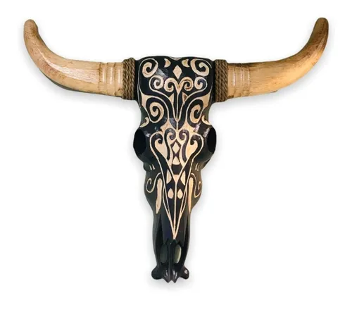

|  | Detalle:
Entre los indígenas de América del Norte el cráneo de vaca está asociado con los rituales, como una
conexión entre la vida y la muerte. Es también un símbolo que representa a los espíritus.
|
Nombre:
Escultura Cráneo de Vaca de madera
|
|
Precio:
$125.00 US
|
|
Tecnica usada:
Madera
Pintura
|